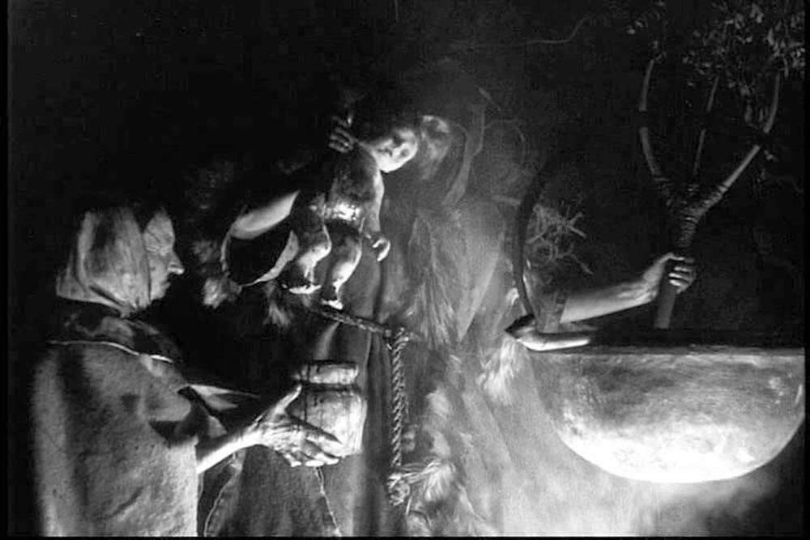

La película que inspiró a Robert Eggers para 'La bruja' salió el mismo año que 'Nosferatu', una obra maestra prohibida en todo el mundo que sigue siendo impactante
Un tratado sobre las brujas que se adelantó al falso documental y el torture porn, influyendo en cineastas como Dreyer o Robert Eggers
28 de Septiembre

Fue una producción sin precedentes en su época. Tras sortear las restricciones de la censura en Dinamarca en 1919, que desaconsejaba tratar temas oscuros o blasfemos, Christensen consiguió financiación para una ambiciosa producción de tres años, un periodo excepcionalmente largo cuando la mayoría de las películas se rodaban en semanas. Dos años de ese periodo se dedicaron a la pura preproducción, investigando meticulosamente la brujería medieval a través de fuentes eruditas, especialmente el ‘Malleus Maleficarum’, un manual del inquisidor alemán de la década de 1400 que también tendría su propia “adaptación” en ‘Martillo para las brujas' (Witchhammer, 1970), irónicamente influenciada por esta.
Estructurada en siete capítulos con distintos enfoques cinematográficos ‘Häxan’ comienza como un seminario donde el propio Christensen, como un profesor, utiliza un puntero para destacar detalles de xilografías e ilustraciones que describen creencias históricas sobre brujería y demonología durante el periodo medieval, y la persecución histórica de las mujeres acusadas de practicarla. Un marco que ya viene cargado de imaginería de horror, humanos hervidos vivos en calderos, demonios que vierten azufre por la garganta de los hombres, incluso una genial representación mecánica a vapor del infierno con diablos animados torturando a víctimas vivas con tridentes.
Una obra maestra prohibida
Estructurada en siete capítulos con distintos enfoques cinematográficos ‘Häxan’ comienza como un seminario donde el propio Christensen, como un profesor, utiliza un puntero para destacar detalles de xilografías e ilustraciones que describen creencias históricas sobre brujería y demonología durante el periodo medieval, y la persecución histórica de las mujeres acusadas de practicarla. Un marco que ya viene cargado de imaginería de horror, humanos hervidos vivos en calderos, demonios que vierten azufre por la garganta de los hombres, incluso una genial representación mecánica a vapor del infierno con diablos animados torturando a víctimas vivas con tridentes.
Ese prólogo pronto da paso a recreaciones dramáticas pseudohistóricas de cosas que supuestamente hacían las brujas, visualizaciones de rumores que hacen que parezcan hechos. Una primera fase tiene a lugareños culpando a las mujeres de todos los problemas domésticos, desde las vacas que no dan leche hasta los mortinatos y los incendios domésticos, y los actos de hechicería son plasmados a medida de la imaginación de esa gente. En una escena cortada por la censura, una vieja arranca los dedos de la mano de un ladrón muerto para hacer uno de sus brebajes. Vemos a jóvenes brujas bailar desnudas con el Diablo o volar con escobas, lo que muestra cómo los logros técnicos fueron notables para su época. En lugar de utilizar métodos convencionales, el equipo construyó una enorme maqueta de ciudad sobre un carrusel gigante que contenía más de 250 casas de dos metros de altura, manejadas por veinte hombres.